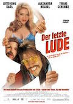
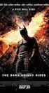

Favorite movies | |
|  |
Der letzte LudeOberprolet und Möchtegernzuhälter (umgangssprachlich: -„lude“) Andi Ommsen hat es sich zum Ziel gemacht, den Hamburger Kiez wieder zurückzuerobern. Auf dem Weg dahin muss er jedoch zunächst kleine Brötchen backen bzw. Stullen schmieren: Andi wird von den Prostituierten nicht für voll genommen und hat sich bei ihnen allenfalls als Stullen-Verkäufer einen Namen gemacht. |
|  |
The dark night risesNach dem Tod des Staatsanwalts Harvey Dent alias Two-Face nahm Batman die Schuld für dessen Verbrechen auf sich, um Dents Werk zu schützen. Er wurde vom Gotham City Police Department gejagt und zog sich daher als Bruce Wayne auf sein wiedererrichtetes Anwesen Wayne Manor zurück. |
Sport Teams | |
Hamburger SV |
|
Club An Der Alster |